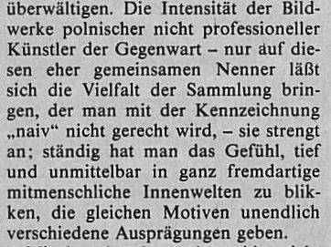

«Die Intensität der Bildwerke, denen man mit der Kennzeichnung >naiv< nicht gerecht werde, lasse einen tief und unmittelbar in fremdartige mitmenschliche Innenwelten blicken.»
Durch das Raffen des originalen Satzes wird hier die Aussage des Satzes leicht verändert, so dass sich die Kennzeichnung bei Meier auf die Intensität der Bilder bezieht, während sie sich im Zeitungsartikel auf „die Vielfalt der Sammlung“ bezieht, die Meier weggekürzt.
Auch die Zusammenführung zweier Sätze zu Einem radiert die Kritik des Journalisten, dass die Betrachtung der Sammlung auch anstrenge, da man ständig das Gefühl habe „tief und unmittelbar in fremdartige mitmenschliche Innenwelten zu blicken“ in Kombination mit deren Intensität bei Meier zu einer positiven Satzaussage führen.
Linguistische Operationen
man → einen